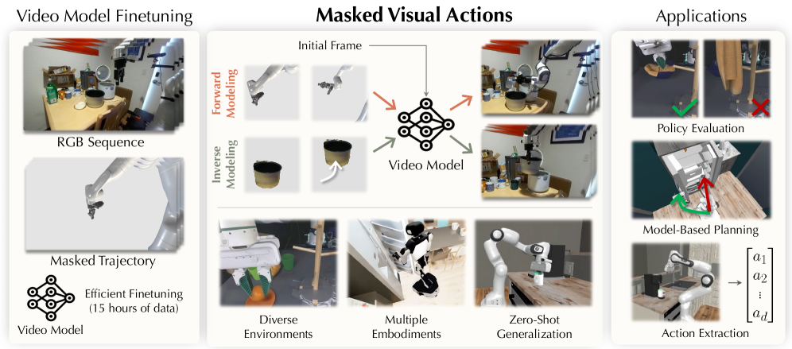
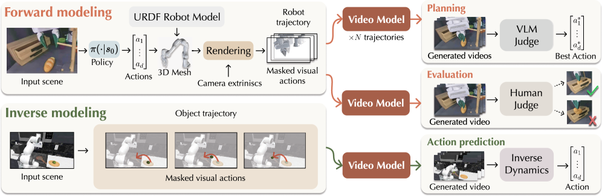

Hadi Alzayer, Wenlong Huang, Haonan Chen, Christopher Luey, Lvmin Zhang, Maneesh Agrawala, Gordon Wetzstein, Li Fei-Fei, Yilun Du, Jiajun Wu, Jia-Bin Huang · Stanford · University of Maryland College Park · Harvard
Video World ModelMasked ActionsForward/InverseDROIDWan-Fun
제출: 2026년 7월 21일 · 백본 Wan-Fun-Control 2.2 14B · 8× H200, LoRA r=256, 약 4일
한 줄 요약 (TL;DR)
액션을 픽셀 공간 안의 부분적으로 노출된 궤적 영상(masked visual action)으로 표현해, 사전학습된 비디오 모델을 그대로 robotic world model로 쓸 수 있게 한 통합 인터페이스. 같은 체크포인트가 forward(로봇 → 장면 반응 예측)와 inverse(원하는 물체 움직임 → 로봇 동작 회수)를 모두 zero-shot으로 수행한다. DROID·시뮬레이션의 단 15시간 마스크 예시로 LoRA(r=256) 파인튜닝만 하고도 DROID LPIPS 0.0945 (Ctrl-World 0.362 대비 −73%), 정책 평가에서 실제와 상관 r=0.982, 새 embodiment 일반화까지 달성.
1배경 · 문제의식
비디오 생성 모델은 강력한 시각 prior와 물리 감각을 이미 갖고 있지만, 이를 로봇 world model로 쓰려면 액션 조건화 방식이 문제다. 기존 접근은 (a) low-dim end-effector 상태를 concat/AdaLN으로 주입하거나, (b) 스켈레톤·6D pose 등 별도 표현을 배우는데, 이 signals는 사전학습된 비디오 모델의 native 표현(픽셀 공간)과 mismatch가 있어 새 embodiment·새 뷰포인트로 잘 옮겨가지 않고 학습 데이터도 많이 필요하다.
또한 world model의 두 방향성 — 미래 예측(forward)과 desired outcome으로부터 동작 회수(inverse) — 는 통상 별도로 학습되어야 하는데, 둘 다 "장면의 시공간적 인과관계"를 필요로 한다는 점에서 하나의 표현으로 통합할 수 있다는 게 저자들의 통찰이다.
2핵심 Contribution
Masked Visual Actions — 액션을 "임의 개체(entity)의 부분적으로 노출된 시공간 궤적"으로 정의. 마스크 M∈{0,1}T×H×W와 참조 프레임 I₀로부터 pθ(V | M⊙V, I₀) 를 학습해 픽셀 공간에서 조건화가 완결.
Forward & Inverse 통합 — 어떤 entity를 "revealed"로 조건화하느냐만 바꾸면 같은 모델이 forward(로봇 노출→장면 예측)와 inverse(물체 노출→로봇 동작 예측)를 zero-shot으로 수행. 별도 학습 불필요.
15시간 데이터로 사전학습 비디오 모델 적응 — 세그멘테이션 기반(DROID + SAM)과 URDF 렌더 기반의 두 마스크 생성 파이프라인. Wan-Fun-Control 2.2 14B에 LoRA(r=256)만 얹어 4일 학습으로 DROID 기준 SOTA·새 embodiment 일반화까지 달성.
3Method
표현: masked visual action
비디오 V∈ℝT×H×W×3, 마스크 M∈{0,1}T×H×W에 대해 모델 입력은 M⊙V(공개된 픽셀만 남기고 나머지는 균일 회색). 참조 이미지 I₀와 함께 넣으면 모델은 나머지 마스크된 영역을 채워 넣도록 학습된다. 마스크가 로봇만 덮으면 forward, 물체만 덮으면 inverse가 된다.
백본과 조건화
백본
Wan-Fun-Control 2.2 14B (사전학습된 video diffusion / I2V 계열)
파인튜닝
LoRA rank 256 (backbone 동결 + 저랭크 어댑터)
주입 방식
M⊙V를 채널 concat으로 공간 정렬해 조건화. 미공개 픽셀은 uniform gray
학습
batch 4 × 8 H200, 약 10,000 step / 4일
마스크 데이터 구축 (두 파이프라인)
Segmentation 기반 — DROID 실측 영상에 SegmentAnything를 "robotic arm" 프롬프트로 돌려 각 프레임의 로봇 실루엣 마스크 획득. 실제 로봇 픽셀을 그대로 노출.
URDF 렌더 기반 — 로봇 상태(관절각)와 URDF 메쉬를 카메라 좌표에 맞춰 렌더링해 합성 로봇 실루엣을 만든다. RoboCasa 시뮬레이션 데이터에서 4,000 예시 확보. Cross-embodiment 학습에 유리.
총 학습 데이터: DROID demonstrations 약 1,000개 + Robocasa 4,000 예시 ≈ 15시간 상당. 이 양으로 14B 비디오 모델을 world model로 전환.
Forward vs Inverse
같은 학습 목적 하나로 두 방향을 얻는다: 로봇 마스크만 조건에 넣으면 → forward dynamics (씬 반응 생성), 물체 마스크만 넣으면 → inverse (관측된 물체 움직임을 만들 수 있는 로봇 동작을 픽셀로 합성). Inverse의 결과는 렌더된 로봇 실루엣이므로, 별도의 video-to-action 회귀(간단한 CNN+MLP)로 실제 joint action을 뽑아낼 수 있다.
4실험 결과
Video reconstruction quality (Table 1)
Dataset
LPIPS ↓
SSIM ↑
PSNR ↑
DROID (Ctrl-World 참고)
0.362
—
—
DROID (Ours)
0.0945
0.887
23.74
BEHAVIOR (Ours)
0.123
0.843
22.90
Real-world (Ours)
0.148
0.864
22.79
Ctrl-World 대비 DROID LPIPS 0.362 → 0.0945 (약 −73%). 시뮬·실세계 모두 단일 체크포인트에서 안정적.
Policy evaluation (그림 9) — 실제와의 상관
RoboCasa 상에서 여러 정책을 world model이 imagined rollout으로 시뮬레이션 → task 진행률 스코어를 VLM으로 평가. 실제 성공률과의 상관 r = 0.982. 정책들의 순위·상대 성능을 실제 롤아웃 없이 안정적으로 예측. (미세한 positive bias 존재.)
Planning (그림 8) — best-of-N 롤아웃 랭킹
초기 이미지에서 N=10 개의 자유 궤적을 모델로 상상한 뒤 VLM 스코어로 최선을 선택 → 실 로봇에 실행. 다양한 태스크에서 baseline 대비 성공률 개선.
Action extraction (그림 11) — inverse의 실용
사용자가 물체의 목표 궤적만 보여주면 모델이 그에 맞는 로봇 실루엣 비디오를 생성 → 간단한 video-to-action 회귀로 실 joint 명령 회수. CoffeeServeMug 태스크에서 90% 성공률, Diffusion Policy·ACT·SmolVLA와 경쟁적. 태스크별 비디오 모델 재학습 불필요.
5Ablation (Table 2, 그림 7)
Conditioning
DROID LPIPS
Real LPIPS
BEHAVIOR LPIPS
End-effector 3D 시각화
0.107
0.183
0.171
Skeleton 시각화
0.106
0.169
0.162
Masked actions (ours)
0.0945
0.148
0.123
Sparse signal(EE·skeleton)은 훈련에서 못 본 embodiment/뷰포인트에 특히 취약. Masked actions는 픽셀 공간 signal이라 정보량이 자연스럽게 매치되어 gracefully 일반화. 새 grippers·bimanual·심지어 orangutan movement 같은 OOD action도 그럴싸하게 재현.
6핵심 Figure / Table

Figure 1 — Masked visual actions as a unified interface. 참조 프레임 + 로봇/물체 영역만 부분 노출된 비디오를 조건으로 넣으면 사전학습된 비디오 모델이 그대로 world model이 된다. 로봇을 노출하면 forward(장면 반응), 물체를 노출하면 inverse(로봇 동작 회수). (출처: arXiv:2607.19343)

Figure 3 — Three applications. 단일 체크포인트로 (i) 정책 평가(상상 롤아웃 → 순위), (ii) best-of-N 계획(N 궤적 상상 → VLM 랭킹), (iii) 물체 목표만으로부터의 action extraction까지 커버. (출처: arXiv:2607.19343)
Table 1 (Reconstruction) — DROID/BEHAVIOR/실세계에서 LPIPS 각각 0.0945/0.123/0.148. Ctrl-World 0.362 대비 큰 폭 감소. Table 2 (Conditioning ablation) — Masked actions가 sparse EE/skeleton 대비 세 도메인 모두에서 우위, 새 embodiment로의 이전에서 gap이 더 커진다.